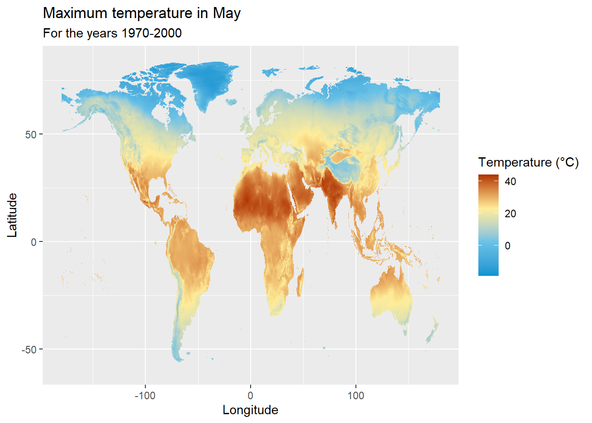
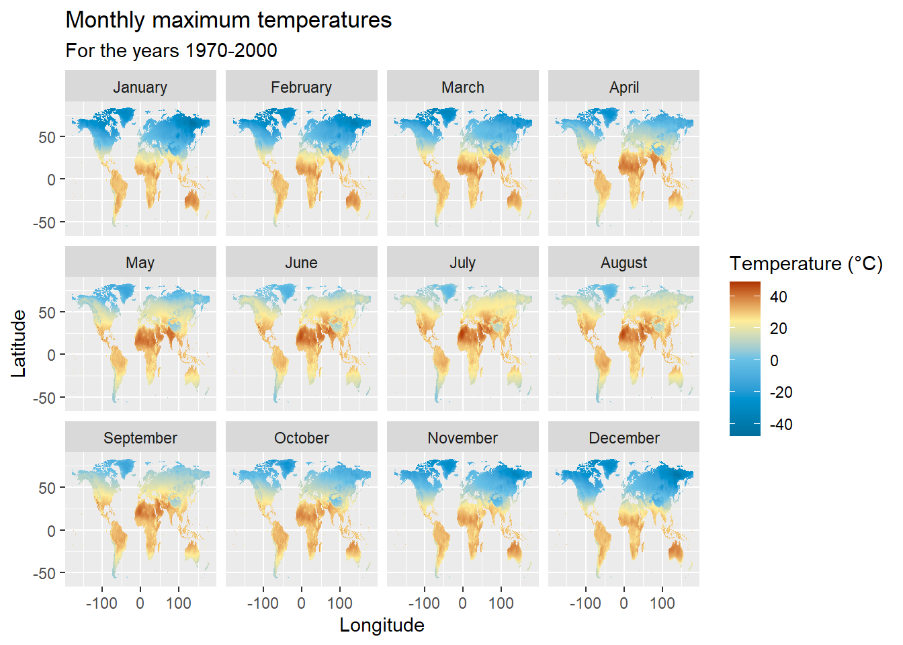
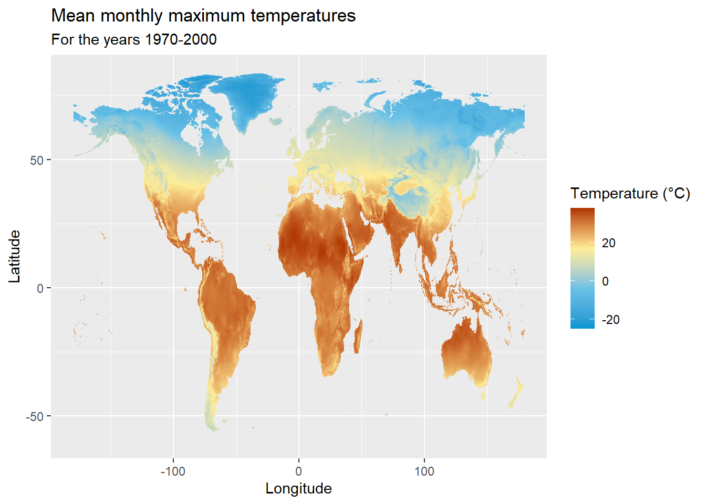
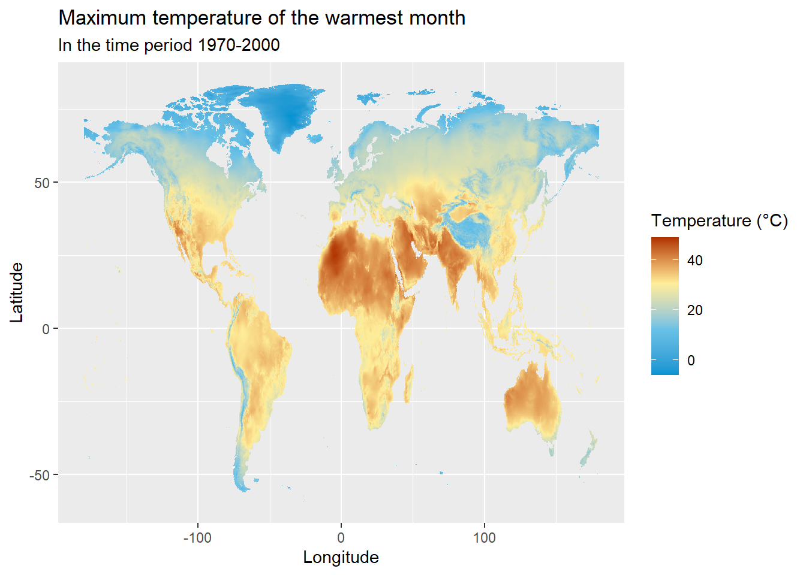

WorldClim databaseWorldclim is a database of global interpolated climate data for global land areas, and provides aggregated historical climate data for the years 1970-2000.
WorldClim provides monthly climate data for minimum, maximum and average temperatures, as well as precipitation, solar radiation, wind speed and water vapor pressure, at four spatial resolutions between 30 seconds (~1 km2) and 10 minutes (~340km2). A list of 19 bioclimatic variables derived as an average of the monthly values for the years 1970-2000 are also provided as more biologically meaningful variables.
The raster R package provides access to the WorldClim database, and allows us to download data sets on the many different climatic conditions provided by WorldClim.
rasterThe raster package can be directly installed from CRAN as follows
install.packages("raster")We can then use getData() function of the raster package to download different climatic conditions from the Worldclim database.
The following example downloads the monthly maximum temperatures at a spatial resolution of 10 minutes (~340km2).
library(raster)
tmax_data <- getData(name = "worldclim", var = "tmax", res = 10)The downloaded monthly maximum temperature data, will be a RasterStack object - which is a collection of RasterLayer objects with the same spatial extent and resolution. This makes sense, because the monthly maximum temperature data should contain 12 RasterLayers for 12 months.
tmax_data## class : RasterStack
## dimensions : 900, 2160, 1944000, 12 (nrow, ncol, ncell, nlayers)
## resolution : 0.1666667, 0.1666667 (x, y)
## extent : -180, 180, -60, 90 (xmin, xmax, ymin, ymax)
## crs : +proj=longlat +datum=WGS84 +no_defs
## names : tmax1, tmax2, tmax3, tmax4, tmax5, tmax6, tmax7, tmax8, tmax9, tmax10, tmax11, tmax12
## min values : -478, -421, -422, -335, -190, -94, -59, -76, -153, -265, -373, -452
## max values : 418, 414, 420, 429, 441, 467, 489, 474, 441, 401, 401, 413Note how each RasterLayer corresponding to the 12 months of the year are named from tmax1 - tmax12 respectively.
The minimum and maximum values for each month however don’t seem practical. This is because the Worldclim temperature data set is stated to have a gain of 0.1, which means that it must be multiplied by 0.1 to convert back to degrees Celsius.
gain(tmax_data)=0.1Thereafter, to extract the maximum temperature of a single month we can use the following approach. This example prints out the RasterLayer object corresponding to the maximum temperature in May - the fifth month of year.
tmax_data$tmax5## class : RasterLayer
## dimensions : 900, 2160, 1944000 (nrow, ncol, ncell)
## resolution : 0.1666667, 0.1666667 (x, y)
## extent : -180, 180, -60, 90 (xmin, xmax, ymin, ymax)
## crs : +proj=longlat +datum=WGS84 +no_defs
## source : C:/Users/acer/Desktop/rspatialdata.github.io/wc10/tmax5.bil
## names : tmax5
## values : -19, 44.1 (min, max)ggplot2The ggplot2 package provides the geom_raster() function, which can be used to easily visualise the downloaded temperature.
The following example visualises the maximum temperature in May. Before visualising the data, we first convert the RasterLayer object to a dataframe, as follows.
# install.packages(c("ggplot2"))
library(ggplot2)
# Converting the raster object into a dataframe
tmax_data_may_df <- as.data.frame(tmax_data$tmax5, xy = TRUE, na.rm = TRUE)
rownames(tmax_data_may_df) <- c()
ggplot(data = tmax_data_may_df,
aes(x=x,y=y)) +
geom_raster(aes(fill = tmax5)) +
labs(title = "Maximum temperature in May",
subtitle = "For the years 1970-2000") +
xlab("Longitude") +
ylab("Latitude") +
scale_fill_gradientn(name = "Temperature (°C)",
colours=c("#0094D1","#68C1E6", "#FEED99","#AF3301"),
breaks = c(-20, 0, 20, 40))
The following example visualises the maximum monthly temperatures for each month.
# install.packages(c("raster", "ggplot2", "tidyverse"))
library(raster)
library(ggplot2)
library(tidyverse)
# Downloading monthly maximum temperature data
tmax_data <- getData(name = "worldclim", var = "tmax", res = 10)
# Converting temperature values to Celcius
gain(tmax_data)=0.1
# Converting the raster object into a dataframe
tmax_data_df <- as.data.frame(tmax_data, xy = TRUE, na.rm = TRUE)
rownames(tmax_data_df) <- c()
# Renaming the month columns, Converting the dataframe into long format and converting month column into a factor
tmax_data_df_long <- tmax_data_df %>%
rename("January" = "tmax1", "February" = "tmax2", "March" = "tmax3", "April" = "tmax4",
"May" = "tmax5", "June" = "tmax6", "July" = "tmax7", "August" = "tmax8",
"September" = "tmax9", "October" = "tmax10", "November" = "tmax11", "December" = "tmax12") %>%
pivot_longer(c(-x,-y), names_to = "month", values_to = "temp")
tmax_data_df_long$month = factor(tmax_data_df_long$month, levels = month.name)
tmax_data_df_long %>%
ggplot(aes(x=x,y=y)) +
geom_raster(aes(fill = temp)) +
facet_wrap(~month) +
labs(title = "Monthly maximum temperatures",
subtitle = "For the years 1970-2000") +
xlab("Longitude") +
ylab("Latitude") +
scale_fill_gradientn(name = "Temperature (°C)",
colours=c("#006D9B","#0094D1","#68C1E6", "#FEED99","#AF3301"),
breaks = c(-40, -20, 0, 20, 40))
The WorldClim database provides the monthly maximum temperatures across the world, but it might also be important to visualise an annual average of these values. This can be done by averaging the monthly maximum temperature values.
The following is a complete example of downloading monthly maximum temperature values, calculating their mean and visualising it.
# install.packages(c("raster","ggplot2", "magrittr"))
library(raster)
library(ggplot2)
library(magrittr)
# Downloading monthly maximum temperature data
tmax_data <- getData(name = "worldclim", var = "tmax", res = 10)
# Converting temperature values to Celcius
gain(tmax_data)=0.1
# Calculating mean of the monthly maximum temperatures
tmax_mean <- mean(tmax_data)
# Converting the raster object into a dataframe
tmax_mean_df <- as.data.frame(tmax_mean, xy = TRUE, na.rm = TRUE)
tmax_mean_df %>%
ggplot(aes(x=x,y=y)) +
geom_raster(aes(fill = layer)) +
labs(title = "Mean monthly maximum temperatures",
subtitle = "For the years 1970-2000") +
xlab("Longitude") +
ylab("Latitude") +
scale_fill_gradientn(name = "Temperature (°C)",
colours=c("#0094D1","#68C1E6", "#FEED99","#AF3301"),
breaks = c(-20, 0, 20, 40))
This example uses the same approach as the previous example but only extracts and visualises the mean monthly temperature in Nigeria.
# install.packages(c("raster","ggplot2", "magrittr", "sf", "rgeoboundaries"))
library(raster)
library(ggplot2)
library(magrittr)
library(sf)
library(rgeoboundaries)
# Downloading monthly maximum temperature data
tmax_data <- getData(name = "worldclim", var = "tmax", res = 10)
# Converting temperature values to Celcius
gain(tmax_data)=0.1
# Calculating mean of the monthly maximum temperatures
tmax_mean <- mean(tmax_data)
# Downloading the boundary of Nigeria
nigeria_sf <- geoboundaries("Nigeria")
# Extracting temperature data of Nigeria
tmax_mean_ngeria <- raster::mask(tmax_mean, as_Spatial(nigeria_sf))
# Converting the raster object into a dataframe
tmax_mean_nigeria_df <- as.data.frame(tmax_mean_ngeria, xy = TRUE, na.rm = TRUE)
tmax_mean_nigeria_df %>%
ggplot(aes(x=x,y=y)) +
geom_raster(aes(fill = layer)) +
geom_sf(data = nigeria_sf, inherit.aes = FALSE, fill=NA) +
labs(title = "Mean monthly maximum temperatures in Nigeria",
subtitle = "For the years 1970-2000") +
xlab("Longitude") +
ylab("Latitude") +
scale_fill_gradient(name = "Temperature (°C)",
low = "#FEED99",
high = "#AF3301")The list of 19 bioclimatic variables provided by the Worldclim database are derived from the monthly values, in order to generate more biologically meaningful variables.
The complete list of variables and their codes can be found here
The process of downloading and visualising these variables follows a similar approach to the tutorial. The following is a complete example of downloading and visualising the “Maximum Temperature of the Warmest Month”.
# install.packages(c("raster", "ggplot2", "magrittr"))
library(raster)
library(ggplot2)
library(magrittr)
# Downloading bioclimatic data
bio <- getData(name = "worldclim", var = "bio", res = 10)
# Converting temperature values to Celcius
gain(bio)=0.1
# Extracting only the 5th bioclimatic variable and onverting the raster object into a dataframe
bio5_df <- as.data.frame(bio$bio5, xy = TRUE, na.rm = TRUE)
bio5_df %>%
ggplot(aes(x=x,y=y)) +
geom_raster(aes(fill = bio5)) +
labs(title = "Maximum temperature of the warmest month",
subtitle = "In the time period 1970-2000") +
xlab("Longitude") +
ylab("Latitude") +
scale_fill_gradientn(name = "Temperature (°C)",
colours=c("#0094D1","#68C1E6", "#FEED99","#AF3301"),
breaks = c(-20, 0, 20, 40))
WorldClim website: https://worldclim.org/data/index.htmlraster package documentation: https://www.rdocumentation.org/packages/raster/versions/3.4-5